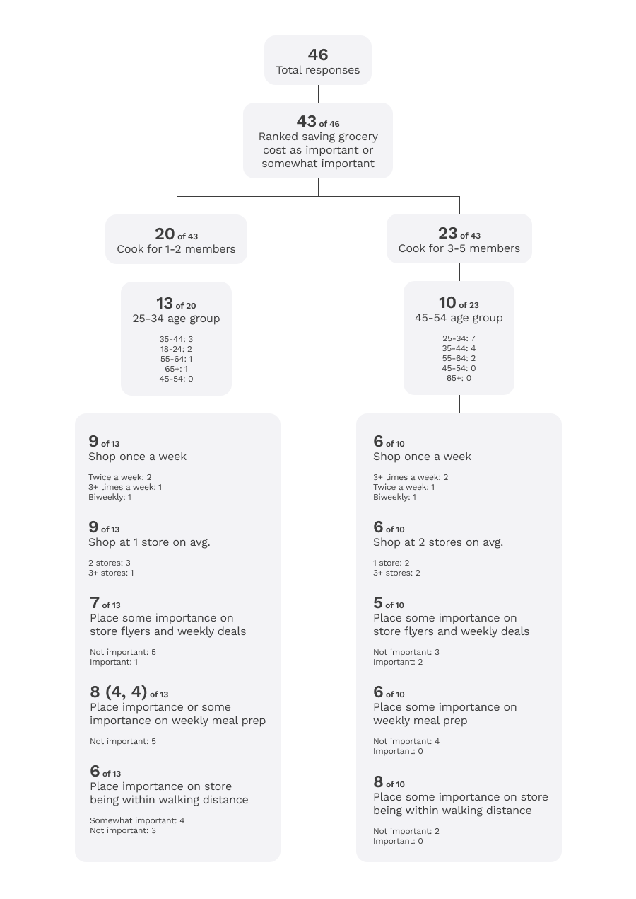
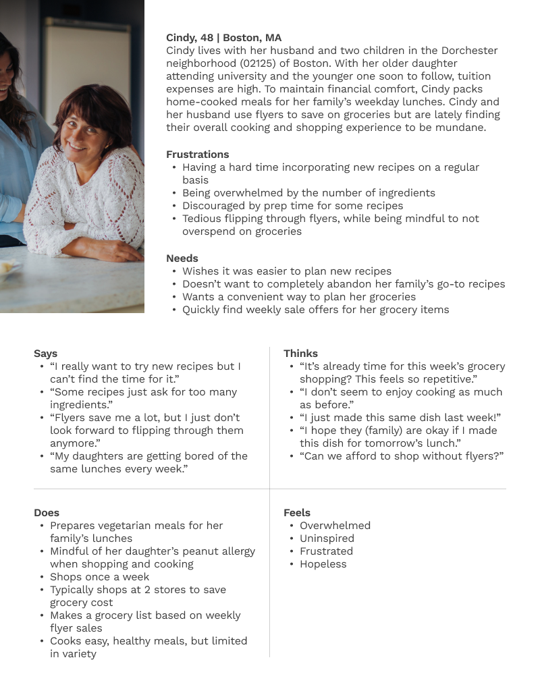
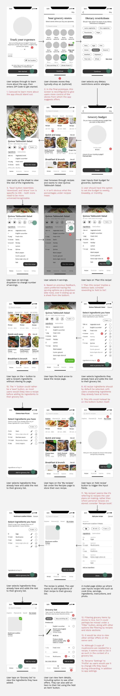
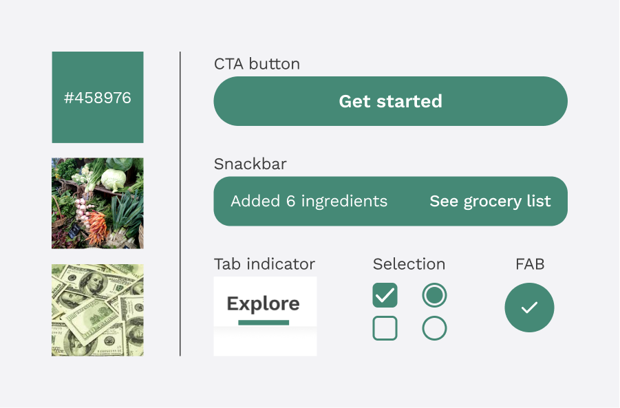

Savery
Case study · App design · Collaborative project
Jump to prototypeProject goals 🎯
Having worked on my first project independently, I wished to collaborate with a fellow UX designer this time. I had the pleasure to work with Lillian, whom I connected with through the Brooklyn Product Design Meetup Slack group. She was especially helpful early in the project as we actively evaluated our ideas and being accountable for oversights or biases. We made a point to generate ideas independently first before sharing them to minimize influencing each others' thoughts. I personally wanted to improve my research analysis (to create more representative user personas) and conducting usability tests.
Tools 🔧
Figma, Qualtrics, Illustrator, Trello, After Effects
Project duration 📅
Jan. – Mar., 2021 (2 months)
Quick links 🐇
Discovery & research User personas Proposed solution Lo-fi wireframes Mid-fi prototype Visual design Final prototype Gauging success Future considerations ReflectionDiscovery & research
Context
Grocery cost is an expense people can control but isn’t necessarily easy. Deciding what to cook, buying the right ingredients on the next grocery trip while being conscious of cost are often times a hassle. This becomes a routine, with feelings of not having enough time to plan or try new recipes, cooking a limited variety of dishes every week, tediously sorting through flyers, and opting to eat out.
Thankfully, there are apps freely available to those looking to make their lives easier. Yummly, Epicurious, NYT Cooking, Sidechef, Whisk, and Mealime allow users to browse recipes and populate a grocery list based on recipe ingredients. Some give users the liberty to store their own recipes for future reference. When it comes to saving cost, Flipp is a popular platform to compare prices across many local grocery stores and browse weekly offers.
What's the problem?
There isn’t a problem per se, as much as an inconvenience. Ideally, people using an app to sort out their meals and
groceries would have a go-to that encompasses all aspects into a seamless experience. In reality however, apps
mentioned above exist as silos catered to specific aspects of the overall experience such as discovering recipes,
meal planning, finding sale offers, and budgeting. As a result, users are inconvenienced by having to use multiple,
disconnected apps. We are proposing an app that combines all key aspects mentioned above into a single user
experience.
Survey research
We generated a survey using Qualtrics to understand people’s attitudes and habits towards recipes and grocery shopping. We are thankful to have received 46 responses, which helped us prioritize design areas. Here’s a high-level summary, followed by the complete data visualizations.
- 70% of responses came from age groups 25-34 and 45-54
- Relatively even split between those that cook for 1-2 people vs. 3-5 people
- Majority (61%) shop for groceries once a week
- A slightly greater portion (46%) shop at two stores, over one store (37%)
- Most place importance in saving grocery costs and using store flyers
- Requiring too many ingredients and unavailability of certain ingredients at home are the top two factors discouraging people from trying new recipes
User personas
I created two user personas by progressively filtering through survey data. I started filtering down responses by those who rated ‘saving grocery costs’ as important or somewhat important. I then split the pool into two cohorts, one for those who cook for 1-2 household members and the other for 3-5. I picked the biggest age group from each cohort to understand their habits further.
Based on the chart above, I came up with the personas of Cindy and Jimmy.
Proposed solution
Primary goals
- Ease dissonance by helping users pick recipes for their everyday meals
- Save users time by finding economical offers for items on their grocery list
- Help users stay within their budget by tracking grocery expenses
Initial solution was unrealistic
The initial solution was to design an app that suggests recipes tailored to a user’s diet preferences and meal budget. Each recipe would have an associated price per serving based on ingredient prices at local grocery stores. After the user adds recipes to their recipe plan, they can select offers for ingredients, and generate a grocery list based on their selections. After a handful of usability tests using this prototype, users felt:
- Price per serving metric for recipes was unintuitive
- Suggested recipes shouldn’t be limited by price per serving
- ‘Recipe plan’ flow felt linear and restrictive, especially the snackbar that notifies when the price per serving of a recipe exceeds the user’s initial limit
- They were unable to add items not associated with recipes to the grocery list (e.g. chips)
In addition, the backend processes would be unnecessarily complex, pulling ingredient prices from local stores to calculate the price per serving of recipes a user may not even consider. For said reasons, we abandoned this concept.
Revised solution
Apart from the three primary goals mentioned, we had to design with the aim to get users to start using the app as part of their regular grocery trips. Here is a glance at key factors, including how we tackled issues faced by the previous concept.
Open vs. curated recipes
Would the recipes be populated using community contributions or be curated by in-house culinary staff? Each have their
pros and cons, but we decided on the latter as it allows for standardizing recipes and easier content updates.
Recipe content
The recipes would at the very minimum feature the essentials from cuisines around the world. We categorized them
into meal types (i.e. breakfast, lunch, dinner, etc.), as users prefer to find and plan recipes that way. According
to our survey, YouTube is a major source for recipes as it allows viewers to follow along and relate to chef
personalities. I incorporated this into the app through my idea of ‘YouTube Weekly’, where users can discover
trending recipes and make it a part of their meal planning experience. Additionally, all recipes will be available
to view in a video format.
Doing away with price per serving
After receiving feedback, the price per serving metric was too granular and did not serve users as expected. If our
goal is to help users save grocery cost, we should rather target their overall expenditures. This not only reduces
the backend load, but more importantly gives users greater flexibility to cook and shop for what they wish.
Getting rid of 'Recipe plan' flow
Users mentioned the ‘Recipe plan’ flow felt linear and restrictive. They would prefer adding recipe ingredients
directly to the grocery list without having to go through the step-by-step process that is the ‘Recipe plan’. In the
revised version, users should be able to populate their grocery list within a few taps.
Adding personal recipes
On most days, people tend to cook meals they are familiar with. For this reason, the app will allow users to record
their own recipes for future reference and meal planning.
Store preferences
Based on survey responses, 46% shop at two stores per grocery trip, likely for cost saving, product variety, and
freshness. This infers that people have preferences for the stores they shop at. With this in mind, the app should
provide users the option to be more selective of the store from which offers are suggested.
Suggested offers for items on grocery lists
Should users be presented with offers to select from or should the app pre-select an offer it thinks is the most
economical for items on the grocery list? Based on feedback, most wish the app pre-selects the offer for each
grocery item, while giving its users the flexibility to opt for alternative offers if preferred.
Lo-fi wireframes
Here are lo-fi wireframes of the revised concept. User tasks include:
- Onboarding
- Viewing a recipe
- Adding ingredients of a recipe to grocery list
- Storing a personal recipe
- Viewing grocery list and an item on it
Mid-fi prototype
Test out the mid-fi prototype here. Below are screenshots with accompanying explanations. Numbers circled in red denote user feedback.
Visual design
App name and logo
I came up with Savery, a wordplay between ‘savoury’ and ‘save’. As for the logo, I dabbled with and was drawn to the negative space created by the spine of the uppercase S as it loosely resembled the shape of a wooden spatula. I generated the variations below and liked the 3rd design, before adding the implied vertical line of the dollar sign on the 4th and final version.
Colour
For the app’s primary colour, I decided on green as it is typically associated with freshness and finance. I also used green to accent various screen elements such as CTA buttons, tab indicators, checkmarks, radio buttons, and certain active selections.
Typeface
The mastheads of several food magazines and recipe books use serif typefaces, which factored into my rationale for Savery’s typeface choices. I decided on pairing DM Serif Display with Work Sans. DM Serif is a naturally heavier and elegant typeface, so it worked well as a H1 header, while Work Sans’ legibility took care of H2 headers and beyond.
Graphical elements
I obtained certain vector graphics through the free illustration site, Undraw. I downloaded and imported their SVG files into Illustrator where I modified them to suit my needs. Recipe photos were sourced from Unsplash and Google Images. This is a personal portfolio project and will not be used commercially.
Final prototype
Onboarding
- ZIP Code: 02122
- Dietary restrictions: Vegetarian; peanut allergy
- Store preferences: Flexible
- Grocery budget: Shops once a week; $1,000 monthly budget
User tasks
- Find the recipe for Quinoa Tabbouleh and add its ingredients to your grocery list
- Add a recipe of your own, then add its ingredients to grocery list
- View grocery list; see which lemons to buy
- Add potatoes to your grocery list
- Add an expense
Gauging success
The metrics outlined below may be used to gauge whether the main goals of the app are achieved.
Future considerations
Stores without a website/product catalogue
Many people shop at stores that don’t have a website or a digital product catalogue. Without that data, the current version of Savery would be unable to suggest offers from those stores. A potential solution would be to add a store-side aspect where grocers sign up and update products on sale, if they find it worthwhile for their business. Savery would use this info to ensure their offers are suggested to users. Another idea would be to design an app that builds up a community where shoppers can share sale offers they found in-store, which others can filter by the grocery items they are looking to buy.
Standardizing unit price
When it comes to groceries, especially produce and meats, there can often be discrepancies when comparing two similar products. Lemons for example, can be sold individually (priced as each) and in a bag (priced in lbs.), making it harder to decide on the more economical format as they do not share a common unit. To address this, Savery’s backend would require a catalogue that dictates how many units of an item are in a unit weight, like knowing there are roughly 4 lemons in a pound. This backend implementation would be a big undertaking that could be made easier if partnered with a grocer that may have all these conversions figured out.
Onboarding purchased grocery items from receipt
Savery can evolve into a more insightful platform with the capability to onboard grocery items a user purchased by scanning their receipt. By working with major grocers to implement a QR system or by linking a store card, Savery would be able to track and provide users with better insights on their purchasing habits, enabling them to make more informed decisions about what they buy.
Weekly deals and price watch
In the current version, a user can add an item (unassociated with a recipe) to their grocery list using the ‘add item’ FAB, then find the best offer for it. For future iteration, a ‘weekly deals’ tab could be implemented, allowing users to browse through featured offers at local grocery stores and add an item to their grocery list if they wish. They could even set notifications for when a certain item goes on sale or drops in price.
Diet preferences
For the project’s sake, I kept the diet selection fairly modest. If Savery were to be developed, users would be able to select from a wider range of diet preferences such as high-protein, low-carb, low-fat, keto, paleo, etc.
Social interactions
While everyone recognized the primary goals of Savery, some mentioned it would be nice to have a social aspect. This includes commenting on recipes and joining food interest groups within the app. This aspect could be implemented based on user demand, and feasibility on Savery’s end in terms of development and community moderation.
Sponsorships and partnerships
Savery can collaborate with a variety of companies across food and health industries to expand its user base and revenue streams. This includes featuring sample recipes curated by top chefs, weight-loss programs, brands like Betty Crocker and Pillsbury, and food blogs. Savery can forge tie-ups with grocers to implement a rewards system, and pin sponsored offers.
Reflection
Firstly, I was amazed with how many people responded to our survey. It was intriguing combing through responses to find trends between data points, giving us a better understanding of why people shop the way they do. Working with Lillian greatly reduced project time in the initial stages and encouraged me to not overthink design considerations. Although work deadlines kept her busy around when we started the mid-fi prototype, she provided feedback as I carried through the rest of the project. Lastly, I improved on conducting usability tests by consciously ensuring I minimized influencing users on how they interacted with the prototypes. By doing so, it was much easier to notice the screen elements users were drawn to.